CODING AGENTS AS PIXEL WORLD MODELS
traex/DeepSeek-V4.1-Flash · 0079
点击播放 · 原生 RGB 像素
逐轮保存的候选
回放视频、检查图与代码变化。
每份候选均可单独播放。实际图片检查记录在下方工具轨迹中。
候选 01播放与检查图
点击播放 · 原生 RGB 像素

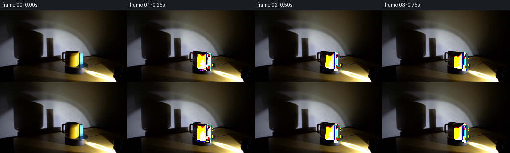
展开代码变化
--- 上一保存版本
+++ 本次保存版本
@@ -0,0 +1,201 @@
+from pathlib import Path
+
+import cv2
+import numpy as np
+
+from artifact_io import save
+
+
+CASE = Path(__file__).resolve().parent
+N_FRAMES = 20
+
+
+def _alpha(mask, sigma=0.55):
+ return cv2.GaussianBlur(mask.astype(np.float32), (0, 0), sigma)
+
+
+def _composite(dst, patch, alpha, x, y):
+ h, w = alpha.shape
+ x0, y0 = int(round(x)), int(round(y))
+ x1, y1 = x0 + w, y0 + h
+ sx0, sy0 = max(0, -x0), max(0, -y0)
+ dx0, dy0 = max(0, x0), max(0, y0)
+ dx1, dy1 = min(dst.shape[1], x1), min(dst.shape[0], y1)
+ if dx1 <= dx0 or dy1 <= dy0:
+ return
+ sx1 = sx0 + dx1 - dx0
+ sy1 = sy0 + dy1 - dy0
+ a = alpha[sy0:sy1, sx0:sx1, None]
+ dst[dy0:dy1, dx0:dx1] = (
+ dst[dy0:dy1, dx0:dx1] * (1.0 - a)
+ + patch[sy0:sy1, sx0:sx1].astype(np.float32) * a
+ )
+
+
+def _source_layers(frame):
+ h, w = frame.shape[:2]
+
+ mug_mask = np.zeros((h, w), np.uint8)
+ cv2.rectangle(mug_mask, (140, 86), (163, 119), 255, -1)
+ cv2.ellipse(mug_mask, (151, 88), (12, 5), 0, 0, 360, 255, -1)
+ handle = np.zeros_like(mug_mask)
+ cv2.ellipse(handle, (139, 99), (6, 9), 0, 0, 360, 255, -1)
+ cv2.ellipse(handle, (141, 99), (3, 6), 0, 0, 360, 0, -1)
+ mug_mask = cv2.bitwise_or(mug_mask, handle)
+
+ block_mask = np.zeros((h, w), np.uint8)
+ cv2.fillPoly(
+ block_mask,
+ [np.array([[158, 86], [168, 86], [168, 119], [157, 119]], np.int32)],
+ 255,
+ )
+
+ remove = cv2.bitwise_or(mug_mask, block_mask)
+ remove = cv2.dilate(remove, np.ones((3, 3), np.uint8), iterations=1)
+ plate = cv2.inpaint(frame, remove, 5, cv2.INPAINT_TELEA)
+
+ body_mask = mug_mask.copy()
+ body_mask[:, :140] = 0
+ handle_mask = cv2.bitwise_and(mug_mask, handle)
+
+ return plate, {
+ "body": frame[83:121, 137:166],
+ "body_a": _alpha(body_mask[83:121, 137:166]),
+ "handle": frame[88:111, 132:144],
+ "handle_a": _alpha(handle_mask[88:111, 132:144]),
+ "block": frame[84:121, 156:171],
+ "block_a": _alpha(block_mask[84:121, 156:171]),
+ }
+
+
+def _contact_shadow(frame, cx, foot_y, width, strength):
+ layer = np.zeros_like(frame, np.float32)
+ layer[:] = (2, 2, 2)
+ mask = np.zeros(frame.shape[:2], np.float32)
+ cv2.ellipse(
+ mask,
+ (int(round(cx + 2)), int(round(foot_y - 1))),
+ (int(round(width)), 3),
+ 0,
+ 0,
+ 360,
+ strength,
+ -1,
+ )
+ mask = cv2.GaussianBlur(mask, (0, 0), 2.0)[..., None]
+ frame[:] = frame * (1.0 - mask) + layer * mask
+
+
+def _draw_handle(frame, layers, body_cx, body_top, phi, behind):
+ # The handle follows the mug's azimuth. Its projected width collapses
+ # as it swings toward the camera or the far side of the body.
+ horiz = np.cos(phi)
+ depth = np.sin(phi)
+ width = 12.0
+ scale_x = 0.36 + 0.64 * abs(horiz)
+ src = layers["handle"]
+ alpha = layers["handle_a"]
+ new_w = max(5, int(round(src.shape[1] * scale_x)))
+ src = cv2.resize(src, (new_w, src.shape[0]), interpolation=cv2.INTER_LINEAR)
+ alpha = cv2.resize(alpha, (new_w, alpha.shape[0]), interpolation=cv2.INTER_LINEAR)
+ if depth < 0:
+ alpha *= 0.62
+ # Left-facing handle at phi=pi; right-facing at phi=0.
+ if horiz >= 0:
+ x = body_cx + 8.5
+ else:
+ x = body_cx - 8.5 - new_w
+ y = body_top + 5.0 + 1.4 * depth
+ _composite(frame, src, alpha, x, y)
+
+
+def _draw_mug(frame, layers, cx, foot_y, phi):
+ body_top = foot_y - 31.0
+ body_cx = cx
+ _contact_shadow(frame, cx + 1.0, foot_y, 12, 0.52)
+ if np.sin(phi) < 0:
+ _draw_handle(frame, layers, body_cx, body_top, phi, behind=True)
+ _composite(
+ frame,
+ layers["body"],
+ layers["body_a"],
+ body_cx - 14.5,
+ body_top - 2.0,
+ )
+ if np.sin(phi) >= 0:
+ _draw_handle(frame, layers, body_cx, body_top, phi, behind=False)
+
+
+def _draw_block(frame, layers, cx, foot_y, psi):
+ src = layers["block"]
+ alpha = layers["block_a"]
+ face_w = max(3, int(round(9.0 * abs(np.cos(psi)) + 2.0)))
+ side_w = max(1, int(round(5.0 * abs(np.sin(psi)))))
+ x = int(round(cx - face_w / 2))
+ y = int(round(foot_y - 32))
+
+ _contact_shadow(frame, cx + 1.5, foot_y, 7, 0.42)
+ # Dark side face supplies the cuboid turn while the bright sampled face
+ # retains the cyan material and edge highlights from the source frame.
+ side_x = x + face_w if np.cos(psi) >= 0 else x - side_w
+ side = np.array([24, 100, 96], np.float32)
+ cv2.rectangle(
+ frame,
+ (side_x, y + 2),
+ (side_x + side_w - 1, y + 32),
+ side.tolist(),
+ -1,
+ )
+ face = cv2.resize(src[:, 2:11], (face_w, src.shape[0]), interpolation=cv2.INTER_LINEAR)
+ face_a = cv2.resize(alpha[:, 2:11], (face_w, src.shape[0]), interpolation=cv2.INTER_LINEAR)
+ _composite(frame, face, face_a, x, y)
+ cv2.line(
+ frame,
+ (x, y + 2),
+ (x + face_w - 1, y + 2),
+ (47, 129, 124),
+ 1,
+ cv2.LINE_AA,
+ )
+
+
+def generate():
+ first = cv2.cvtColor(
+ cv2.imread(str(CASE / "first_frame.png"), cv2.IMREAD_COLOR),
+ cv2.COLOR_BGR2RGB,
+ )
+ plate, layers = _source_layers(first)
+ frames = [first.copy()]
+
+ center = np.array([162.2, 118.3], np.float32)
+ mug_angle0 = np.pi - 0.05
+ block_angle0 = -np.pi / 2
+ for index in range(1, N_FRAMES):
+ progress = index / N_FRAMES
+ turn = 2.0 * np.pi * progress
+
+ frame = plate.astype(np.float32)
+ mug_angle = mug_angle0 + turn
+ mug_r = 10.8
+ mug_x = center[0] + mug_r * np.cos(mug_angle)
+ mug_foot = center[1] + 2.15 * np.sin(mug_angle)
+
+ block_angle = block_angle0 + turn
+ block_r = 1.0
+ block_x = center[0] + block_r * np.cos(block_angle)
+ block_foot = center[1] + 0.25 * np.sin(block_angle)
+
+ objects = [(mug_foot, "mug"), (block_foot, "block")]
+ for _, kind in sorted(objects, key=lambda item: item[0]):
+ if kind == "mug":
+ _draw_mug(frame, layers, mug_x, mug_foot, turn)
+ else:
+ _draw_block(frame, layers, block_x, block_foot, turn)
+
+ frames.append(np.clip(frame, 0, 255).astype(np.uint8))
+
+ save(np.stack(frames), CASE)
+
+
+if __name__ == "__main__":
+ generate()
候选 02播放与检查图
点击播放 · 原生 RGB 像素

展开代码变化
--- 上一保存版本
+++ 本次保存版本
@@ -52,7 +52,9 @@
remove = cv2.bitwise_or(mug_mask, block_mask)
remove = cv2.dilate(remove, np.ones((3, 3), np.uint8), iterations=1)
- plate = cv2.inpaint(frame, remove, 5, cv2.INPAINT_TELEA)
+ # Only rebuild the small footprint occupied by the props. The broad
+ # photographic shadow and room texture remain a stable background plate.
+ plate = cv2.inpaint(frame, remove, 3, cv2.INPAINT_TELEA)
body_mask = mug_mask.copy()
body_mask[:, :140] = 0
@@ -127,16 +129,12 @@
def _draw_block(frame, layers, cx, foot_y, psi):
- src = layers["block"]
- alpha = layers["block_a"]
- face_w = max(3, int(round(9.0 * abs(np.cos(psi)) + 2.0)))
- side_w = max(1, int(round(5.0 * abs(np.sin(psi)))))
+ face_w = max(4, int(round(9.0 * abs(np.cos(psi)) + 1.0)))
+ side_w = max(1, int(round(4.5 * abs(np.sin(psi)))))
x = int(round(cx - face_w / 2))
- y = int(round(foot_y - 32))
+ y = int(round(foot_y - 33))
_contact_shadow(frame, cx + 1.5, foot_y, 7, 0.42)
- # Dark side face supplies the cuboid turn while the bright sampled face
- # retains the cyan material and edge highlights from the source frame.
side_x = x + face_w if np.cos(psi) >= 0 else x - side_w
side = np.array([24, 100, 96], np.float32)
cv2.rectangle(
@@ -146,9 +144,10 @@
side.tolist(),
-1,
)
- face = cv2.resize(src[:, 2:11], (face_w, src.shape[0]), interpolation=cv2.INTER_LINEAR)
- face_a = cv2.resize(alpha[:, 2:11], (face_w, src.shape[0]), interpolation=cv2.INTER_LINEAR)
- _composite(frame, face, face_a, x, y)
+ face = np.array([27, 183, 188], np.float32)
+ cv2.rectangle(frame, (x, y + 1), (x + face_w - 1, y + 32), face.tolist(), -1)
+ cv2.line(frame, (x + 1, y + 3), (x + 1, y + 31), (59, 211, 211), 1)
+ cv2.line(frame, (x + face_w - 2, y + 3), (x + face_w - 2, y + 31), (18, 128, 137), 1)
cv2.line(
frame,
(x, y + 2),
@@ -157,6 +156,7 @@
1,
cv2.LINE_AA,
)
+ cv2.line(frame, (x, y + 32), (x + face_w - 1, y + 32), (12, 83, 88), 1)
def generate():
@@ -167,30 +167,30 @@
plate, layers = _source_layers(first)
frames = [first.copy()]
- center = np.array([162.2, 118.3], np.float32)
+ center = np.array([157.3, 119.0], np.float32)
mug_angle0 = np.pi - 0.05
- block_angle0 = -np.pi / 2
+ block_angle0 = 0.02
for index in range(1, N_FRAMES):
progress = index / N_FRAMES
turn = 2.0 * np.pi * progress
frame = plate.astype(np.float32)
mug_angle = mug_angle0 + turn
- mug_r = 10.8
+ mug_r = 6.3
mug_x = center[0] + mug_r * np.cos(mug_angle)
- mug_foot = center[1] + 2.15 * np.sin(mug_angle)
+ mug_foot = center[1] + 1.45 * np.sin(mug_angle)
block_angle = block_angle0 + turn
- block_r = 1.0
+ block_r = 6.2
block_x = center[0] + block_r * np.cos(block_angle)
- block_foot = center[1] + 0.25 * np.sin(block_angle)
+ block_foot = center[1] + 1.35 * np.sin(block_angle)
objects = [(mug_foot, "mug"), (block_foot, "block")]
for _, kind in sorted(objects, key=lambda item: item[0]):
if kind == "mug":
- _draw_mug(frame, layers, mug_x, mug_foot, turn)
+ _draw_mug(frame, layers, mug_x, mug_foot, mug_angle)
else:
- _draw_block(frame, layers, block_x, block_foot, turn)
+ _draw_block(frame, layers, block_x, block_foot, block_angle)
frames.append(np.clip(frame, 0, 255).astype(np.uint8))
候选 03播放与检查图
点击播放 · 原生 RGB 像素

展开代码变化
--- 上一保存版本
+++ 本次保存版本
@@ -136,7 +136,7 @@
_contact_shadow(frame, cx + 1.5, foot_y, 7, 0.42)
side_x = x + face_w if np.cos(psi) >= 0 else x - side_w
- side = np.array([24, 100, 96], np.float32)
+ side = np.array([32, 92, 128], np.float32)
cv2.rectangle(
frame,
(side_x, y + 2),
@@ -144,15 +144,15 @@
side.tolist(),
-1,
)
- face = np.array([27, 183, 188], np.float32)
+ face = np.array([104, 236, 250], np.float32)
cv2.rectangle(frame, (x, y + 1), (x + face_w - 1, y + 32), face.tolist(), -1)
- cv2.line(frame, (x + 1, y + 3), (x + 1, y + 31), (59, 211, 211), 1)
- cv2.line(frame, (x + face_w - 2, y + 3), (x + face_w - 2, y + 31), (18, 128, 137), 1)
+ cv2.line(frame, (x + 1, y + 3), (x + 1, y + 31), (156, 249, 252), 1)
+ cv2.line(frame, (x + face_w - 2, y + 3), (x + face_w - 2, y + 31), (31, 151, 194), 1)
cv2.line(
frame,
(x, y + 2),
(x + face_w - 1, y + 2),
- (47, 129, 124),
+ (70, 172, 194),
1,
cv2.LINE_AA,
)
候选 04播放与检查图
点击播放 · 原生 RGB 像素
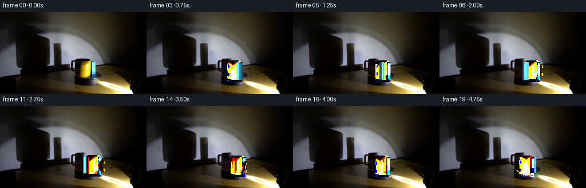
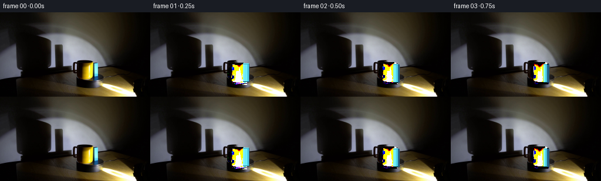
展开代码变化
--- 上一保存版本
+++ 本次保存版本
@@ -38,6 +38,7 @@
mug_mask = np.zeros((h, w), np.uint8)
cv2.rectangle(mug_mask, (140, 86), (163, 119), 255, -1)
cv2.ellipse(mug_mask, (151, 88), (12, 5), 0, 0, 360, 255, -1)
+ mug_mask[:, 159:] = 0
handle = np.zeros_like(mug_mask)
cv2.ellipse(handle, (139, 99), (6, 9), 0, 0, 360, 255, -1)
cv2.ellipse(handle, (141, 99), (3, 6), 0, 0, 360, 0, -1)
@@ -144,8 +145,9 @@
side.tolist(),
-1,
)
- face = np.array([104, 236, 250], np.float32)
- cv2.rectangle(frame, (x, y + 1), (x + face_w - 1, y + 32), face.tolist(), -1)
+ texture = layers["block"][3:35, 4:12]
+ texture = cv2.resize(texture, (face_w, 32), interpolation=cv2.INTER_LINEAR)
+ frame[y + 1 : y + 33, x : x + face_w] = texture.astype(np.float32)
cv2.line(frame, (x + 1, y + 3), (x + 1, y + 31), (156, 249, 252), 1)
cv2.line(frame, (x + face_w - 2, y + 3), (x + face_w - 2, y + 31), (31, 151, 194), 1)
cv2.line(
候选 05播放与检查图
可观测工具轨迹
实际执行的命令与返回图片。
命令 1exit 0
/bin/bash -c "pwd && rg --files -g 'prompt.txt' -g 'GENERATION_RULES.md' -g '"'!*.mp4'"' -g '"'!*.mov'"' | sort"
命令 2exit 0
/bin/bash -c "find . -maxdepth 2 -type f -printf '%p\\n' | sort | head -200"
命令 3exit 0
/bin/bash -c 'git status --short --branch 2>/dev/null || true'
命令 4exit 0
/bin/bash -c "sed -n '1,240p' prompt.txt"
命令 5exit 0
/bin/bash -c "sed -n '1,320p' GENERATION_RULES.md"
命令 6exit 0
/bin/bash -c "sed -n '1,260p' artifact_io.py"
命令 7exit 0
/bin/bash -c "sed -n '1,260p' player_template.html"
命令 8exit 127
/bin/bash -c "file first_frame.png && python - <<'PY'
from PIL import Image
im=Image.open('first_frame.png')
print(im.mode, im.size)
PY"命令 9exit 0
/bin/bash -c "python - <<'PY'
import numpy as np
from PIL import Image
im=np.array(Image.open('first_frame.png'))
print('min max mean', im.min(), im.max(), im.mean(axis=(0,1)))
for y in range(0,144,12):
row=im[y]
print(y, [tuple(row[x]) for x in [0,32,64,96,128,160,192,224,255]])
PY"命令 10exit 0
/bin/bash -c "python - <<'PY' import importlib.util for m in ['cv2','scipy','skimage','numpy','PIL']: print(m, bool(importlib.util.find_spec(m))) PY"
命令 11exit 0
/bin/bash -c "python - <<'PY'
from PIL import Image
im=Image.open('first_frame.png')
im.crop((90,70,205,143)).resize((690,438), Image.Resampling.NEAREST).save('.tmp/scene_crop.png')
im.crop((0,0,180,125)).resize((720,500), Image.Resampling.NEAREST).save('.tmp/wall_crop.png')
PY"命令 12exit 0
/bin/bash -c "python - <<'PY'
import cv2, numpy as np
im=cv2.imread('first_frame.png')
g=cv2.cvtColor(im,cv2.COLOR_BGR2GRAY)
for t in [20,30,40,50,60,70,80,100,120,140]:
m=(g>t).astype(np.uint8)*255
cv2.imwrite(f'.tmp/thr{t}.png',m)
print(im.shape)
# color segment bright yellow / blue HSV ranges
hsv=cv2.cvtColor(im,cv2.COLOR_BGR2HSV)
for name,lo,hi in [('yellow',(15,100,100),(45,255,255)),('blue',(75,80,60),(115,255,255))]:
m=cv2.inRange(hsv,np.array(lo),np.array(hi))
ys,xs=np.where(m>0)
print(name, len(xs), (xs.min(),ys.min(),xs.max(),ys.max()) if len(xs) else None)
cv2.imwrite('.tmp/'+name+'.png',m)
PY"命令 13exit 0
/bin/bash -c "python - <<'PY'
import cv2, numpy as np
im=cv2.imread('first_frame.png')
mask=np.zeros(im.shape[:2],np.uint8)
# poly around dynamic objects, with padding
pts=np.array([[137,79],[184,80],[188,119],[134,121]],np.int32)
cv2.fillPoly(mask,[pts],255)
out=cv2.inpaint(im,mask,5,cv2.INPAINT_TELEA)
cv2.imwrite('.tmp/inpaint_obj.png',out)
cv2.imwrite('.tmp/mask_obj.png',mask)
PY"命令 14exit 0
/bin/bash -c "python - <<'PY'
import cv2, numpy as np
im=cv2.imread('first_frame.png')
mask=np.zeros(im.shape[:2],np.uint8)
# dynamic shadows polygons
for pts in [
np.array([[0,0],[110,0],[110,118],[92,118],[80,105],[48,105],[20,110],[0,112]],np.int32),
np.array([[98,20],[126,20],[128,112],[100,112]],np.int32),
np.array([[105,100],[150,100],[150,143],[108,143]],np.int32),
np.array([[118,75],[202,75],[202,134],[118,134]],np.int32),
]: cv2.fillPoly(mask,[pts],255)
out=cv2.inpaint(im,mask,7,cv2.INPAINT_TELEA)
cv2.imwrite('.tmp/base_inpaint.png',out)
cv2.imwrite('.tmp/base_mask.png',mask)
PY"命令 15exit 0
/bin/bash -c "python - <<'PY'
from PIL import Image, ImageDraw
im=Image.open('first_frame.png').convert('RGB')
d=ImageDraw.Draw(im)
for x in range(0,256,10):
c=(255,0,0) if x%50==0 else (80,80,80)
d.line((x,0,x,143),fill=c,width=1)
if x%20==0:d.text((x+1,1),str(x),fill=(255,255,0))
for y in range(0,144,10):
c=(255,0,0) if y%50==0 else (80,80,80)
d.line((0,y,255,y),fill=c,width=1)
if y%20==0:d.text((1,y+1),str(y),fill=(255,255,0))
im.resize((1024,576),Image.Resampling.NEAREST).save('.tmp/grid.png')
PY"命令 16exit 0
/bin/bash -c "python - <<'PY'
import cv2, numpy as np
from PIL import Image
im=cv2.imread('first_frame.png')
h,w=im.shape[:2]
mug=np.zeros((h,w),np.uint8)
# body incl black rim and dark edge
cv2.rectangle(mug,(140,87),(164,118),255,-1)
cv2.ellipse(mug,(152,87),(12,5),0,0,360,255,-1)
# handle outer ring then subtract inner
outer=np.zeros_like(mug); inner=np.zeros_like(mug)
cv2.ellipse(outer,(140,99),(6,9),0,0,360,255,-1)
cv2.ellipse(inner,(141,99),(3,6),0,0,360,0,-1)
mug=cv2.bitwise_or(mug,outer)
mug[inner>0]=0
# block
block=np.zeros_like(mug)
cv2.fillPoly(block,[np.array([[158,85],[168,86],[168,119],[157,119]],np.int32)],255)
# preview separate
for name,m,col in [('mug',mug,(0,255,0)),('block',block,(0,0,255))]:
out=im.copy(); out[m>0]=col
cv2.imwrite('.tmp/mask_'+name+'.png',out)
# combined cutout on checker
comb=cv2.bitwise_or(mug,block)
out=im.copy(); out[comb>0]=[0,255,0]
cv2.imwrite('.tmp/mask_combined.png',out)
print('mug pixels',np.count_nonzero(mug),'block',np.count_nonzero(block),'union',np.count_nonzero(comb))
PY"命令 17exit 0
/bin/bash -c "python - <<'PY'
import cv2, numpy as np
im=cv2.imread('first_frame.png')
h,w=im.shape[:2]
mug=np.zeros((h,w),np.uint8)
cv2.rectangle(mug,(139,88),(164,118),255,-1)
cv2.ellipse(mug,(151,88),(12,5),0,0,360,255,-1)
outer=np.zeros_like(mug)
cv2.ellipse(outer,(139,99),(6,9),0,0,360,255,-1)
mug=cv2.bitwise_or(mug,outer)
cv2.ellipse(mug,(141,99),(3,6),0,0,360,0,-1)
block=np.zeros_like(mug)
cv2.fillPoly(block,[np.array([[158,86],[168,86],[168,119],[157,119]],np.int32)],255)
comb=cv2.bitwise_or(mug,block)
# eroded base? make visual cutout transparent style
cut=im.copy(); cut[comb==0]=255
cv2.imwrite('.tmp/cutout_white.png',cut)
cv2.imwrite('.tmp/combined_mask.png',comb)
PY"命令 18exit 0
/bin/bash -c "python - <<'PY'
from PIL import Image
im=Image.open('first_frame.png')
im.crop((132,80,174,125)).resize((504,540),Image.Resampling.NEAREST).save('.tmp/objects_zoom.png')
PY"命令 19exit 0
/bin/bash -c "python - <<'PY'
import cv2, numpy as np
im=cv2.imread('first_frame.png')
h,w=im.shape[:2]
obj=np.zeros((h,w),np.uint8)
cv2.rectangle(obj,(138,86),(165,120),255,-1)
cv2.ellipse(obj,(151,87),(13,6),0,0,360,255,-1)
cv2.ellipse(obj,(139,99),(7,10),0,0,360,255,-1)
# broad shadow mask
sh=np.zeros((h,w),np.uint8)
polys=[
[[0,0],[101,0],[100,112],[88,112],[80,105],[49,105],[20,111],[0,114]],
[[102,20],[128,20],[129,111],[102,111]],
[[99,99],[150,99],[150,143],[106,143]],
]
for p in polys: cv2.fillPoly(sh,[np.array(p,np.int32)],255)
# union remove objects from shadow mask? object inpaint separately
blur=cv2.GaussianBlur(im,(0,0),8)
base=im.copy(); base[sh>0]=blur[sh>0]
base=cv2.inpaint(base,obj,5,cv2.INPAINT_TELEA)
cv2.imwrite('.tmp/base_soft.png',base)
# compare no dynamic content
cv2.imwrite('.tmp/base_soft_mask.png',sh)
PY"命令 20exit 0
/bin/bash -c 'python generate.py'
命令 21exit 0
/bin/bash -c 'python generate.py'
命令 22exit 0
/bin/bash -c 'ls -la && if [ -f task_spec.json ]; then cat task_spec.json; fi'
命令 23exit 0
/bin/bash -c "python - <<'PY'
from PIL import Image, ImageDraw
import numpy as np
ims=[Image.open(f'frames/{i:02d}.png') for i in range(20)]
# 5x4 contact sheet
out=Image.new('RGB',(256*5,165*4),(18,20,24)); d=ImageDraw.Draw(out)
for i,im in enumerate(ims):
x=(i%5)*256; y=(i//5)*165
out.paste(im,(x,y+21)); d.text((x+4,y+4),f'{i:02d} t={i/4:.2f}s',fill='white')
out.resize((1280,660),Image.Resampling.NEAREST).save('.tmp/all_frames.png')
# animated preview
ims[0].save('.tmp/preview.gif',save_all=True,append_images=ims[1:],duration=250,loop=0,disposal=2)
# verify first and changed pixels
f0=np.array(ims[0]); orig=np.array(Image.open('first_frame.png').convert('RGB'))
print('frame00 exact:',np.array_equal(f0,orig))
for i in range(1,20):
a=np.array(ims[i]); print(i,'changed',int(np.count_nonzero(np.any(a"'!=np.array(ims[i-1]),axis=2))))
PY'命令 24exit 0
/bin/bash -c "python - <<'PY'
from PIL import Image, ImageDraw
ids=[0,3,5,8,10,13,15,18]
out=Image.new('RGB',(256*4,165*2),(20,20,20)); d=ImageDraw.Draw(out)
for j,i in enumerate(ids):
im=Image.open(f'frames/{i:02d}.png'); x=(j%4)*256; y=(j//4)*165
out.paste(im,(x,y+21)); d.text((x+5,y+4),str(i),fill='white')
out.resize((1024,330),Image.Resampling.NEAREST).save('.tmp/keyframes.png')
PY"命令 25exit 0
/bin/bash -c "python - <<'PY'
import cv2
im=cv2.cvtColor(cv2.imread('first_frame.png'),cv2.COLOR_BGR2RGB)
for y in range(84,121,3):
print(y, [tuple(int(v) for v in im[y,x]) for x in range(155,170,2)])
PY"命令 26exit 0
/bin/bash -c "python generate.py && python - <<'PY'
from pathlib import Path
import json,re,numpy as np
from PIL import Image
html=Path('index.html').read_text()
m=re.search(r'const DATA=(.*),W=DATA',html)
data=json.loads(m.group(1))
print('player data:', data['width'], data['height'], data['frames'], data['fps'], len(data['deltas']))
frames=np.load('pixels.npz')['pixels']
print('pixels:',frames.shape,frames.dtype,'range',int(frames.min()),int(frames.max()))
orig=np.array(Image.open('first_frame.png').convert('RGB'))
frame0=np.stack([(frames[:,:,0]>>16)&255,(frames[:,:,0]>>8)&255,frames[:,:,0]&255],axis=2)
print('first frame exact:',np.array_equal(frame0,orig))
print('unique colors/frame:',[len(np.unique(frames[:,:,i])) for i in [0,5,10,15,19]])
PY"命令 27exit 0
/bin/bash -c 'python generate.py'
命令 28exit 0
/bin/bash -c "python - <<'PY'
from PIL import Image, ImageDraw
ids=[0,4,8,12,16,19]
out=Image.new('RGB',(256*3,165*2),(18,20,24));d=ImageDraw.Draw(out)
for j,i in enumerate(ids):
im=Image.open(f'frames/{i:02d}.png');x=(j%3)*256;y=(j//3)*165
out.paste(im,(x,y+21));d.text((x+5,y+4),f'frame {i:02d}',fill='white')
out.resize((1152,495),Image.Resampling.NEAREST).save('.tmp/final_review.png')
PY"命令 29exit 0
/bin/bash -c "python - <<'PY'
from PIL import Image
import numpy as np, json, re
from pathlib import Path
# Verify every frame size/mode and payload correspondence.
for i in range(20):
im=Image.open(f'frames/{i:02d}.png')
assert im.size==(256,144) and im.mode=='RGB'
a=np.load('pixels.npz')['pixels']
for i in range(20):
rgb=np.stack([(a[:,:,i]>>16)&255,(a[:,:,i]>>8)&255,a[:,:,i]&255],axis=2)
assert np.array_equal(rgb,np.array(Image.open(f'frames/{i:02d}.png')))
data=json.loads(re.search(r'const DATA=(.*),W=DATA',Path('index.html').read_text()).group(1))
assert data['frames']==20 and data['fps']==4 and len(data['deltas'])==19
print('validated 20 RGB frames, 256x144, 4 fps; player payload consistent')
PY"命令 30exit 0
/bin/bash -c 'git status --short -- . 2>/dev/null || true'
视觉工具实际返回图片 1

视觉工具实际返回图片 2
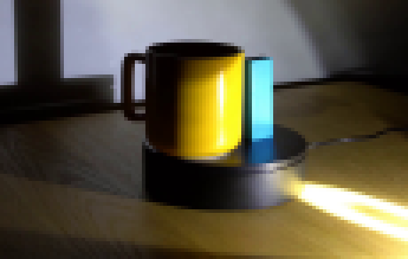
视觉工具实际返回图片 3
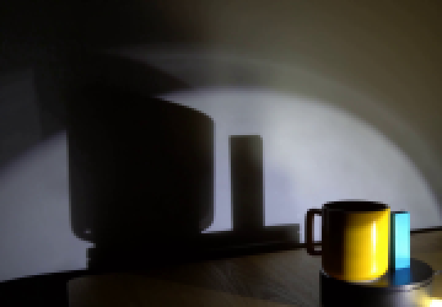
视觉工具实际返回图片 4
视觉工具实际返回图片 5
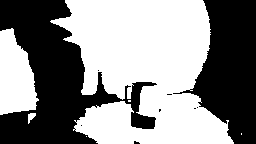
视觉工具实际返回图片 6
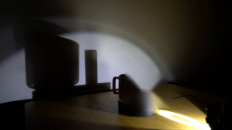
视觉工具实际返回图片 7
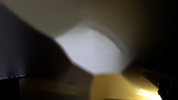
视觉工具实际返回图片 8
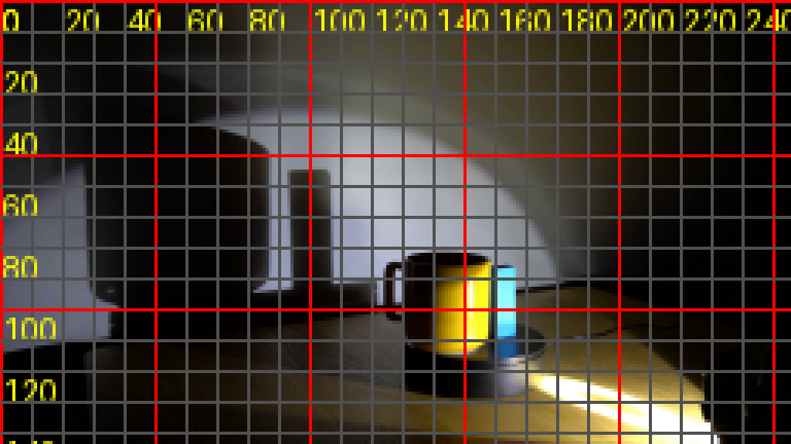
视觉工具实际返回图片 9
视觉工具实际返回图片 10
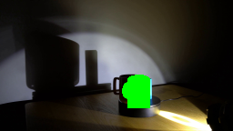
视觉工具实际返回图片 11
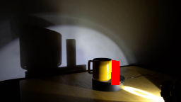
视觉工具实际返回图片 12
视觉工具实际返回图片 13
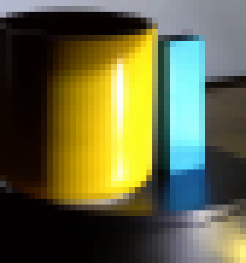
视觉工具实际返回图片 14
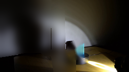
视觉工具实际返回图片 15
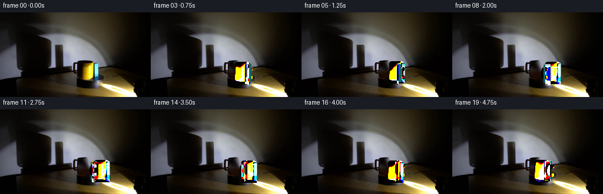
视觉工具实际返回图片 16

视觉工具实际返回图片 17
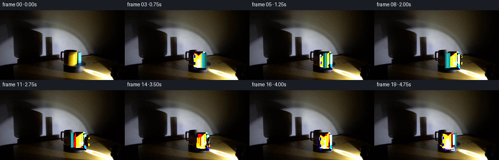
视觉工具实际返回图片 18
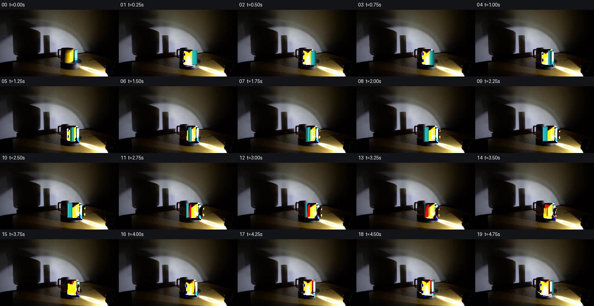
视觉工具实际返回图片 19
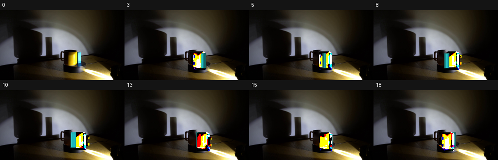
视觉工具实际返回图片 20
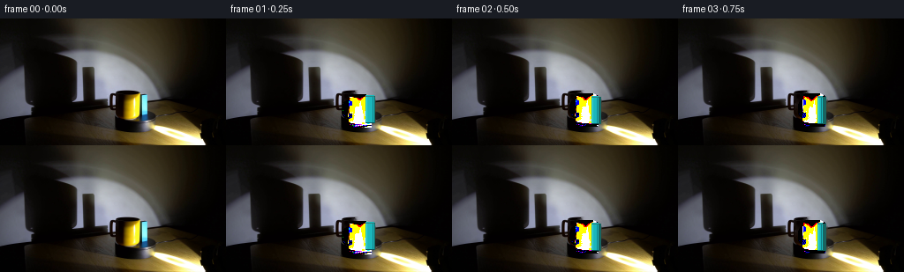
视觉工具实际返回图片 21

视觉工具实际返回图片 22

视觉工具实际返回图片 23
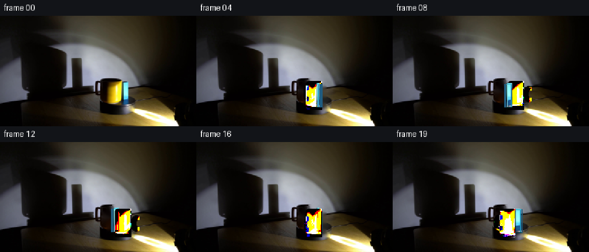
保存候选 5 份；完成命令 30 次；可验证图片返回 23 张。原始 API 响应与完整日志保留在本地。